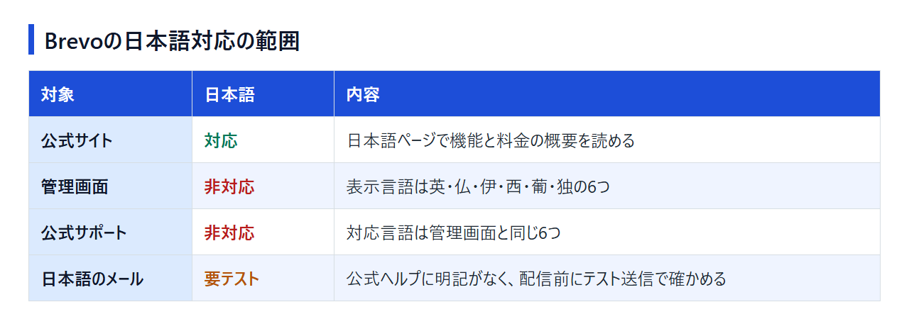

Brevoは日本語で使える？管理画面・日本語メール・サポートの対応範囲
Brevoの公式サイトには日本語のページがあります。ところが、契約後に操作する管理画面と公式サポートは日本語に対応していません。公式情報と公開されている情報をもとに、どこまで日本語で使えるかを整理しました。英語の画面のままBrevoで日本語メールを配信するか、日本語で運用できるツールに切り替えるかを決める材料にしてください。
日本語の公式サイトで、Brevoの機能と料金プランの概要を先に読めます。
結論：Brevoで日本語なのは公式サイトまで、管理画面とサポートは日本語非対応
Brevoで日本語が使えるのは公式サイトまでで、管理画面と公式サポートは日本語を選べません。日本語のメール配信に使えるかどうかは、テスト送信で表示を確かめてから判断します。

対象ごとの状況は次のとおりです。
- 公式サイト：日本語のページがあり、機能や料金の概要を日本語で読める
- 管理画面：表示言語は6つで、日本語はない
- 公式サポート：対応言語は管理画面と同じ6つで、日本語はない
- 日本語のメール：日本語での配信について公式ヘルプに明記がないため、配信前にテスト送信で確かめる
[画像を挿入: Brevoの日本語公式サイト]
公式サイト・管理画面・サポートで日本語対応が違う
日本語で読めるのは、申し込む前に見る公式サイトです。ログイン後の管理画面にも、公式サポートの窓口にも日本語はありません。キャンペーンの作成、連絡先の管理、請求や解約の手続きといった契約後の作業は、英語などの画面と窓口で進めることになります。
英語の画面のまま使うか、日本語UIのツールにするかの目安
分かれ目は、誰が画面を操作するかと、どのくらい問い合わせが必要になりそうかです。
- Brevoのままでよい人：英語の画面にあまり抵抗がなく、連絡先300件以内の配信を無料のFreeから始めたい
- 日本語で運用できるツールを優先したほうがよい人：社内の複数人が画面を操作する（BrevoのFreeはユーザー1人まで）、トラブルのときに日本語で相談したい
後者に当てはまる場合の候補は、後半の代替ツールの章で紹介します。管理画面まで日本語と確認できているツールと、無料登録で表示言語を確かめたいツールは分けて書いています。
Brevoの管理画面は日本語化できない：対応言語と英語画面での使い方
管理画面には、表示言語を日本語に切り替える設定がありません。日本語で読みたいときは、ブラウザの翻訳機能で補うことになります。
表示言語は6つから選べるが日本語はない
公式ヘルプが案内している管理画面の表示言語は、英語・フランス語・イタリア語・スペイン語・ポルトガル語・ドイツ語の6つです。切り替えは、アカウントメニューから「My profile」を開き、「Language」の項目で行います。ここで選択肢を開けば、日本語がないことを自分で確かめられます。
国内の紹介記事には「管理画面は日本語に対応」と書いたものもありますが、公式の対応言語に日本語は含まれていません。
ブラウザの翻訳機能で読むときの注意点
ChromeやEdgeの翻訳機能を使えば、英語の管理画面を日本語で読めます。ただし、訳されたボタン名は公式ヘルプの英語表記と一致しないので、次の点に気をつけます。
- 送信、削除、請求に関わる操作は、翻訳をオフにして英語の原文でも確かめてから実行する
- メール本文を編集する画面では翻訳を止め、訳された文面を自分の本文と取り違えないようにする
日本語のメールを作って送るときの確認点
管理画面が英語でも、件名や本文は日本語で書けます。本番の前に、自分宛てのテスト送信で表示を確かめます。
Brevoには、1つのキャンペーンを複数の言語に訳して送る機能もあります。言語を追加できるのはEnterpriseだけで、公式の対応言語一覧に日本語は明記されていません。日本語だけで送るなら、多言語機能は使わずに、通常のキャンペーンを日本語で書く形になります。
件名・送信者名・プレビューテキストをテスト送信で確かめる
テスト送信では、件名・送信者名・プレビューテキスト（受信一覧で件名の近くに出る短い文）が崩れずに表示されるか、本文の改行が保たれ文字化けしていないかを見ます。スマホの受信一覧では長い件名が途中で切れるので、伝えたい言葉は件名の前半に置きます。
テンプレートの定型文が英語のまま残っていないか確認する
見落としがちなのが、本文の外に入る定型文です。配信停止のリンク、フッターの送信者情報、登録フォームの完了メッセージや確認メールの文面が、日本語の本文とそろっているかを見ます。末尾だけ英語のまま届くと受信者は違和感を覚えるので、テスト送信の段階で書き換えておきます。
日本語サポート・日本からの支払い・請求書・解約
公式サポートは日本語に対応していません。支払い方法の登録、請求書の取得、解約といった手続きも英語などの画面で行うため、どこで何をするかを先に押さえておきます。
公式サポートは6言語で日本語はない
公式サポートの対応言語は英語・スペイン語・フランス語・イタリア語・ポルトガル語・ドイツ語で、問い合わせは英語で書くのが現実的です。
日本語で相談したい場合は、国内のパートナー企業に頼る方法があります。ハイアップ合同会社は、2025年7月にBrevoのMaster Partnerに認定されたと発表しています。日本語のガイドサイト「BrevoNavi」も同社の運営です。相談できる範囲や費用は、同社の案内を見て判断してください。
日本からの支払い方法
有料プランの支払いに使えるのは、次の2つです。プリペイド式のデビットカードは使えません。
- クレジットカード・デビットカード（決済はAdyenまたはStripe経由）
- PayPal（新しい管理画面「new Admin」のアカウントでは現在使えない）
公式の料金ページは、日本からアクセスすると円（JPY）で表示できます。ただ、契約後の請求が円とドルのどちらになるかは、公開情報からは読み取れません。申し込み画面と最初の請求書で、請求通貨を確かめておきましょう。
請求書PDFと税の確認
請求書はPDFで表示・ダウンロードでき、置き場所は管理画面の種類によって異なります。
- 標準・Classicの画面：My plan > Invoices
- 新しい画面（new Admin）：My plan > Billing history
ダウンロードできるのは、アカウントのownerか、プランを管理する権限を持つユーザーです。経理担当者に請求書を取ってもらうなら、先に権限を付けておきます。
料金は税抜で表示され、税は請求先の住所をもとに決済画面で計算されて請求書に載ります。日本の消費税やインボイス（適格請求書）の扱いは公開情報からは確認できないため、経費処理の方法は税理士に確認してください。
解約とダウングレードの窓口
有料プランはいつでも解約でき、請求期間が終わるとFreeに切り替わります。ただし、次の2つは英語などでサポートに連絡する必要があります。
- 年払いのProfessionalを解約するとき
- 専用IP（dedicated IP）をやめるとき（プランを解約しても専用IPは残る）
月払いのプラン（Starter・Standard・Professional）は、解約の代わりに最大3か月の休止も選べます。休止中は解約や年払いへの切り替え、ユーザーの追加ができません。
料金と始め方：まずFreeで日本語メールの表示を確かめる
BrevoのFreeはクレジットカードなしで登録でき、利用期限もありません。日本語のテスト送信と英語画面での操作をFreeで試し、問題がなければ有料プランに進む順番で十分です。
Freeでできることと有料プランの入口
Freeの主な条件は次のとおりです。
- 送信は1日300通まで（使わなかった分は翌日に繰り越せない。購入確認などのトランザクションメールも同じ枠に含まれる）
- 連絡先は最大100,000件、ユーザーは1人
- 4か月使われないアカウントは削除の対象（自動化やトランザクションメールが動いていれば利用中として扱われる）
連絡先は10万件まで登録できても、送れるのは1日300通です。連絡先が300件を超えるリストに一斉配信すると、Freeでは1日で送り終わりません。リスト全体へ定期的に送るなら、1日の送信上限がないStarter以上が前提になります。
有料プランはStarterが月$9からで、1ドル=158.84円換算（執筆時点の目安。為替で変動）では約1,430円です。その上にStandard（月$18から）とProfessional（月$499から）があり、金額は送信量によって変わります。年払いにすると10%安くなります。
日本語の料金ページで、送る通数に応じたStarterとStandardの金額を、月払いと年払いで見比べられます。
登録からテスト送信までの流れ
アカウントを作ったら送信者の名前とアドレスを登録し、独自ドメインのアドレスから送るならドメイン認証を済ませます。そのうえで日本語の件名と本文を作り、自分宛てにテスト送信して、前の章の確認点を見ていきます。
日本語UI・日本語サポートを重視するなら検討したい代替ツール
管理画面まで日本語で使えることがはっきりしているのは、国産のブラストメールです。Zoho Campaignsは日本語の公式サイトと有料プランの日本語サポートがあり、無料プランに登録すれば管理画面の表示言語も申し込み前に確かめられます。顧客管理やマーケティングオートメーションまでまとめて扱いたいなら、HubSpotも候補に入ります。
Zoho Campaigns：無料プランがあり、有料プランは日本語サポートつき
Zoho Campaignsには日本語の公式サイトと料金ページがあり、2022年2月以降に登録したアカウントは日本のデータセンターを使います。無料プランでも連絡先2,000件・月6,000通まで配信でき、5ユーザーで使えます（配信するメールにはZoho Campaignsのロゴが入る）。BrevoのFreeがユーザー1人までなのに対し、無料でも複数人で使えます。
有料プランでは日本語のサポート窓口とメールサポートを利用でき、送信数も無制限になります（無料プランのサポートは英語のメールのみ）。料金は連絡先の数で決まる円建て（税別）で、連絡先500件ならスタンダードの年間契約が月￥420。支払いにはJCB・Visa・Mastercard・American Expressなどのクレジットカードを使えます。
連絡先の件数ごとに、スタンダードとプロフェッショナルの月額を月間契約と年間契約で比べられます。
ブラストメール：国産で、口座振替や銀行振込でも払える
ブラストメールは株式会社ラクスライトクラウドが運営する国産のメール配信サービスです。料金は登録するアドレスの数で決まり、配信通数に上限はありません。いちばん小さいライトプランは登録アドレス5,000件までで月4,000円（税抜）、別に初期費用が10,000円かかります（1年契約なら5,000円）。
無料プランはなく、7日間の無料トライアルで試す形です。契約期間は3・6・9・12か月から選べ、解約時の違約金や手数料はかかりません。支払いは銀行振込・口座振替・クレジットカードに対応しています。
プランごとの登録アドレス数の上限と、契約期間による初期費用の違いが載っています。
HubSpot Marketing Hub：MA・CRMまで日本語でまとめたい場合
HubSpotは日本語サイトで料金を円表示しており、無料ツールは2ユーザーまで、決済情報を登録せずに使い始められます。日本語で確認できているのは公式サイトと円建ての料金表示までなので、管理画面の表示言語は無料ツールに登録して確かめます。
メール配信を軸にしたBrevoと違い、HubSpotは顧客管理（CRM）やマーケティングオートメーションまで含む製品群です。有料のStarterはシート（利用者の席）単位の課金で、通常価格は1シート月￥2,400（新規向けの期間限定価格が出ている時期もある）。通常価格どうしで比べると、1人で使う場合でもBrevo Starter（月約1,430円から）より高くなります。メールを送るだけなら持て余すので、顧客情報の管理まで1つのツールにまとめたい場合の候補です。
無料ツールから有料プランまで、Marketing Hubの料金を円で見比べられます。
Mailchimp・MailerLiteも管理画面は日本語非対応
Brevoの比較相手によく挙がる2つも、管理画面は日本語に対応していません。Mailchimpの表示言語は英語・スペイン語・フランス語・ポルトガル語・ドイツ語・イタリア語の6つで、有人のチャットとメールのサポートも同じ言語です。ほかの言語は翻訳ツールを使って対応すると案内していますが、日本語の窓口があるわけではありません。MailerLiteの表示言語は英語・スペイン語・ポーランド語の3つです。
英語の画面が不便だという理由でこの2つに乗り換えても、日本語UIの問題は解決しません。選ぶなら、料金や無料枠、機能の違いが判断材料になります。
Brevoの日本語対応でよくある質問
日本語対応に関連して、ほかによく出る疑問に短く答えます。
Brevoの読み方は？
「ブレヴォ」です。公式の日本語サイトでも、この表記が使われています。
SendinblueとBrevoは同じサービス？
同じサービスです。Sendinblueは2023年5月にBrevoへ名前を変えました。旧名のころの日本語記事には、Freeの送信上限など、現在の1日300通とは違う数字が残っているものがあります。
Brevo PushOwlとは違う？
Brevo PushOwlはShopifyストア専用のアプリで、Brevoの仕組みを使ってプッシュ通知やメールなどを配信します。Shopifyで店舗を運営している場合の入口で、それ以外の用途ではBrevo本体を使います。
日本語で問い合わせる方法はある？
公式窓口は日本語での問い合わせを受け付けていません。日本語で相談したいなら、前述の国内のパートナー企業を頼る方法があります。
まとめ：英語の画面に抵抗がなければBrevo、日本語で運用したいなら代替も比べる
Brevoは管理画面とサポートが日本語非対応です。英語の画面で操作できるかと、日本語メールがテスト送信で問題なく表示されるかの2点で決めましょう。契約前に確かめておきたいのは次の3つです。
- 管理画面を英語のまま、またはブラウザ翻訳で補って操作できるか
- 日本語の件名と本文が、テスト送信で崩れずに届くか
- 問い合わせと解約を、英語の窓口で進められるか
Brevoが向いている人
- 英語の管理画面を、ブラウザの翻訳で補いながら操作できる
- 連絡先300件以内の配信を無料のFreeで始め、リストが増えてから有料化を考えたい
日本語UIのツールを選んだほうがよい人
管理画面まで日本語と確認できているのは、国産のブラストメールです。Zoho Campaignsは、無料プランに登録して画面の表示言語を確かめてから決めます。そのうえで、条件ごとに合う候補が変わります。
- 複数人で配信を運用したい：BrevoのFreeはユーザー1人まで。無料で5ユーザーまで使えるZoho Campaignsが候補
- 困ったときに日本語で問い合わせたい：有料プランに日本語サポートがあるZoho Campaignsか、国産のブラストメール
- 支払いを口座振替や銀行振込にしたい：ブラストメール（Zoho Campaignsはクレジットカード払い）
Brevoを候補に残すなら、まずFreeに登録してテスト送信まで進めてみてください。
Freeの条件と、Starter以降のプランで増える機能を日本語のページで確かめてから申し込めます。